Dev Set up
Install Python 3.7
https://www.python.org/downloads/release/python-379/
Set up JDK 1.8
Download and Install Pycharm community edition
https://www.jetbrains.com/pycharm/download
Pycharm setting - Set up python virtual environment interpreter
Note: - Make sure name is ".venv", as this is already set in .gitignore as a file to be ignored while committing to git. Else choose the name and make sure to add it to gitignore - Close and open the terminal after this step to switch to ".venv"
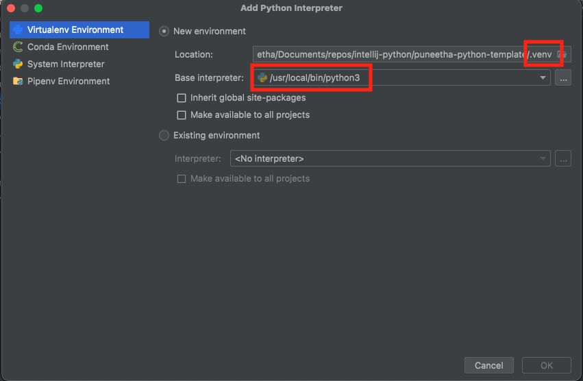
Pycharm setting - Set up integrated tools like test runner, docstring format, etc.
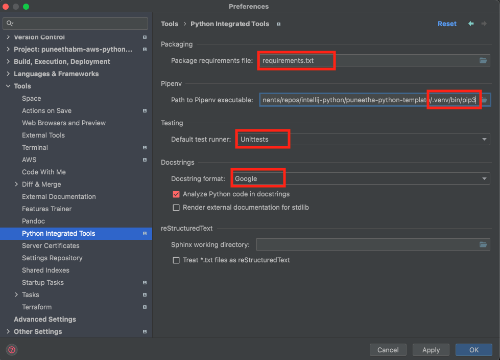
Pycharm setting - Point to pylint config file
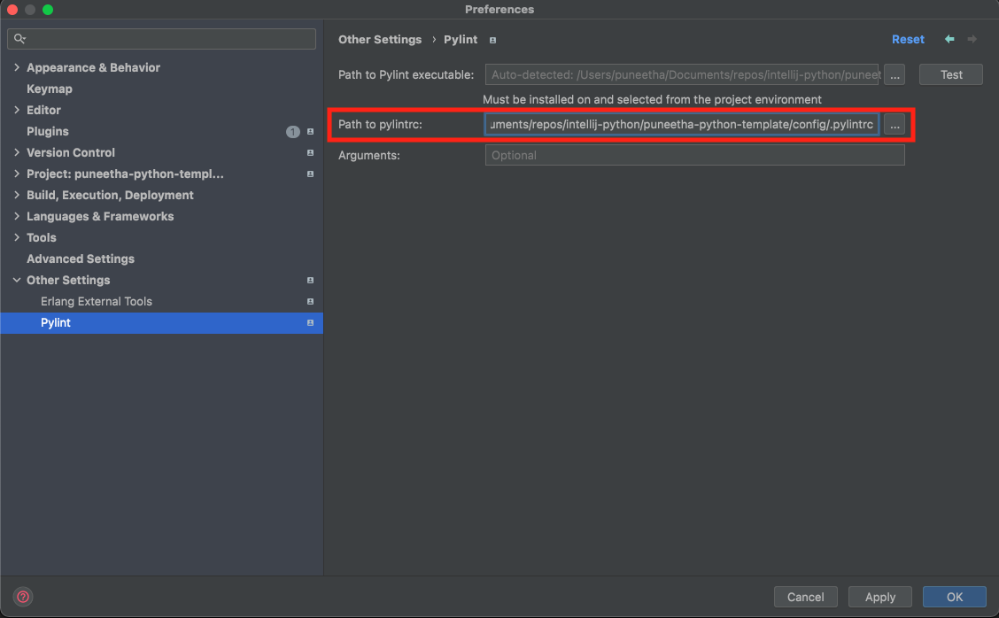
Pycharm setting - Make sure to include the main package name for import to pick up the auto-completion of your package name
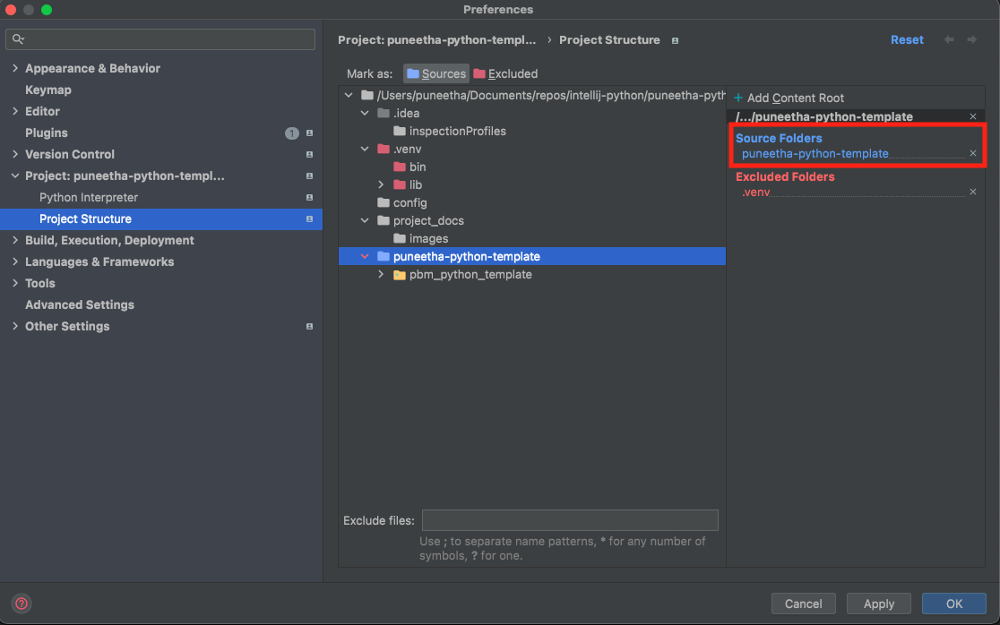
Upgrade pip
Note: Open terminal in PyCharm
python -m pip install -U pip
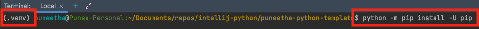
Set below Environment variables in three sections
- Key: PBM_LOG_FILE_PATH
- Value example: "/var/log/data-engineering.log"
Note: More environment variables information is in this python environment mapper file
Section 1: Set environment variables for running the programs
Go to Run -> Edit Configurations -> Templates -> Python 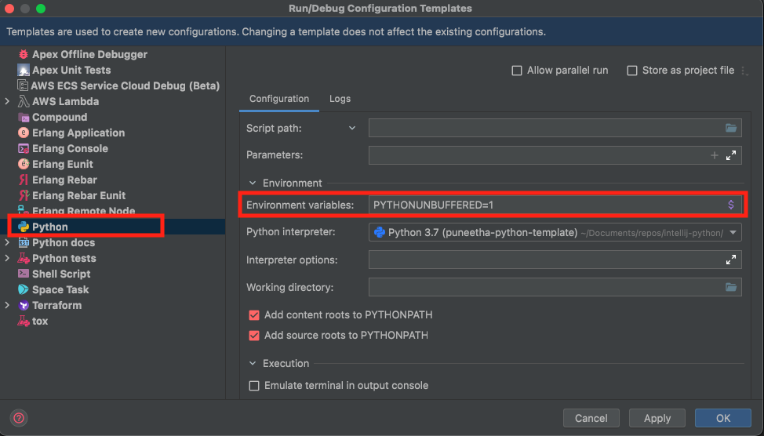
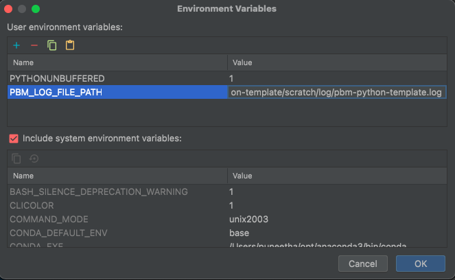
Section 2: Set environment variables for test cases
Go to Run -> Edit Configurations -> Templates -> Python tests -> Unittests 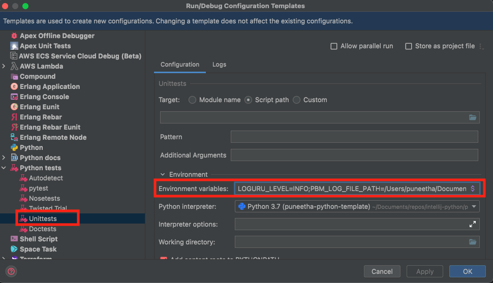
Section 3: Set environment variables for running commands in terminal
Go to Preferences -> Tools -> Terminal -> 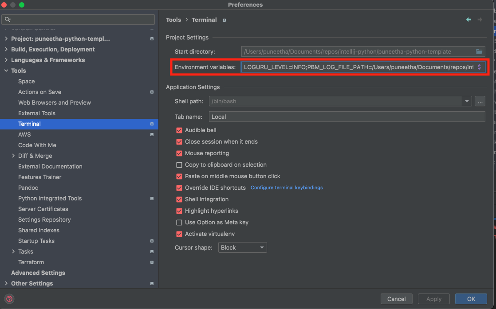
Note: Environment variable values need not be same for all 3 sections. In-fact, they are meant to be different. For example, you might want to set log level to DEBUG in some cases.
Install python packages
Note: Open terminal in PyCharm
pip install -r requirements.txt
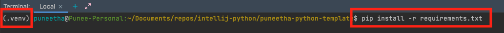
Enable pre-commit
Use the pre-commit hook for linting staged files prior to a commit (mandatory, triggers pydocstyle and pylint)
pre-commit install --hook-type pre-commit
Example
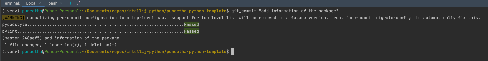
Git helpers
- Run below to save credentials - to avoid entering credentials for every push
git config credential.helper store
- Allow long file name
git config core.longpaths true